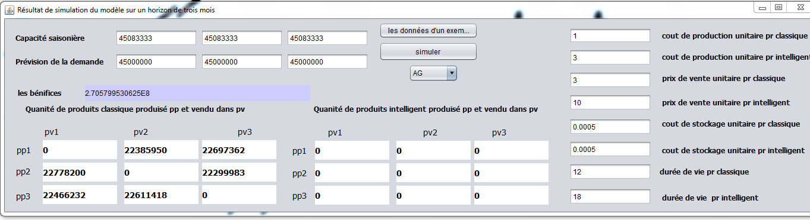
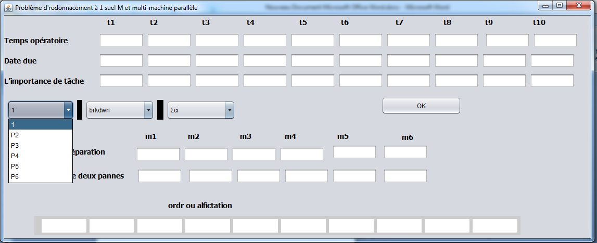

Avant la thèse, j'ai traité une série de problèmes classiques de recherche opérationnelle. La démarche est chaque fois la même : écrire le modèle mathématique, le résoudre avec un solveur tant que la taille le permet, passer à une métaheuristique quand elle ne le permet plus, et finir par une interface qui rend le résultat utilisable par quelqu'un d'autre que moi.
Le cas d'étude est la distribution de gaz butane autour de Tlemcen : un centre d'enfûtage, des points de livraison répartis sur la région, et une flotte limitée de camions de capacités différentes. Il faut décider quel camion sert quel client, avec quelle quantité, et dans quel ordre, pour réduire le coût de transport.
Le problème a été modélisé et résolu sous LINGO, puis traité par un algorithme génétique programmé en Java, avec une interface de planification et une représentation des tournées sur la carte.
Une unité de production alimente plusieurs centres de distribution, qui alimentent à leur tour des magasins. La question est double : combien produire, et combien envoyer de chaque centre vers chaque point de vente à chaque date, pour répondre à la demande au moindre coût de transport. Le modèle, multi-étapes et non linéaire, a été écrit sous LINGO et sous CPLEX.
Sur plusieurs périodes, quand la demande dépasse la capacité, faut-il stocker à l'avance, ajouter de la main-d'œuvre ou faire des heures supplémentaires ? Le modèle arbitre entre ces coûts.
min Σ(i,t) ( v[i,t]·X[i,t] + c[i,t]·I[i,t] ) + Σ(t) ( r[t]·W[t] + o[t]·O[t] )
X[i,t] + I[i,t-1] - I[i,t] = d[i,t] ∀ i, t
Σ(i) k[i]·X[i,t] ≤ W[t] + O[t] ∀ t
0 ≤ W[t] ≤ rm[t] 0 ≤ O[t] ≤ om[t] ∀ t
X : production · I : stock · W : heures normales · O : heures supplémentaires · d : demande, pour le produit i à la période t.
Le cas est celui d'un producteur de café qui fabrique deux produits distincts par leur durée de conservation : un emballage classique et un emballage qui la prolonge. La demande varie avec les saisons. Que produire à chaque saison, et à quelle saison le vendre ? Le modèle a été écrit sous LINGO, puis résolu par un algorithme génétique en Java, seul ou combiné à une recherche locale, dans un programme de simulation.

Trois configurations classiques — machine unique, machines parallèles, flow-shop — avec ce qui complique un atelier réel : des ressources limitées, des pannes, des périodes d'indisponibilité. Un même outil, écrit en Java, résout le problème par algorithme génétique selon le critère choisi : somme des dates de fin, retard maximal, retards pondérés, durée totale ou nombre de travaux en retard.

Ce sont des travaux d'étude : ils établissent des modèles et des outils, pas des gains mesurés en exploitation.